새롭게 일렁이다
어제와 오늘의 일렁임을
내일로 전합니다

새롭게 일렁이다란?
파동, 파장, 일렁임
고요한 물에 어떠한 것이 떨어지면, 그 곳을 중심으로 원형의 파형이 일어납니다.
이 파장은 곧잘 나아가다 점차 흐려져 눈에 보이지 않을지언정, 끝끝내 어딘가에 당도합니다.
그 곳에서는 미약할지나마 새로운 일이 일어납니다.
우리의 독립은 이러한 작고 작은, 미약한 변화가 켜켜이 쌓여 이루어졌습니다.

우리의 선조들이 세상에 삶을 내던져 작은 일렁임이 일었습니다.
이 일렁임은 오늘에 닿아 자유와 평화를 선물했습니다.
우리가 이어받은 이 파장은, 이 일렁임은 이어질 것입니다.
그러나, 우리는 고민해야 합니다.
우리가 이어받은 일렁임을 어떤 방식으로 기억해야 할까요?
우리는 새로운 일렁임을 통해 세상을 어떻게 바꿀 수 있을까요?
우리가 기억해야 할 선대의 의지는 무엇이며,
어떻게 가꾸어 나가야 할까요?
우리는 이 모든 질문을 짊어지고 나아갑니다.
그들이 마땅히 그랬던 것 처럼
우리는 대한을 기억하는 행위의 중심이 될 것입니다